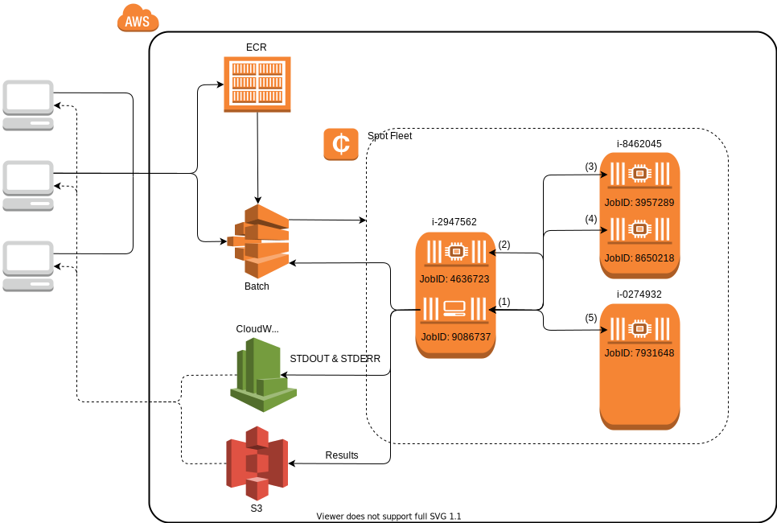

AWSClusterManagers


Julia cluster managers which run within the AWS infrastructure.
Installation
Pkg.add("AWSClusterManagers")Sample Project Architecture
The details of how the AWSECSManager & AWSBatchManager will be described in more detail shortly, but we'll briefly summarizes a real world application archtecture using the AWSBatchManager.

The client machines on the left (e.g., your laptop) begin by pushing a docker image to ECR, registering a job definition, and submitting a cluster manager batch job. The cluster manager job (JobID: 9086737) begins executing julia demo.jl which immediately submits 4 more batch jobs (JobIDs: 4636723, 3957289, 8650218 and 7931648) to function as its workers. The manager then waits for the worker jobs to become available and register themselves with the manager. Once the workers are available the remainder of the script sees them as ordinary julia worker processes (identified by the integer pid values shown in parentheses). Finally, the batch manager exits, releasing all batch resources, and writing all STDOUT & STDERR to CloudWatch logs for the clients to view or download and saving an program results to S3. The clients may then choose to view or download the logs/results at a later time.